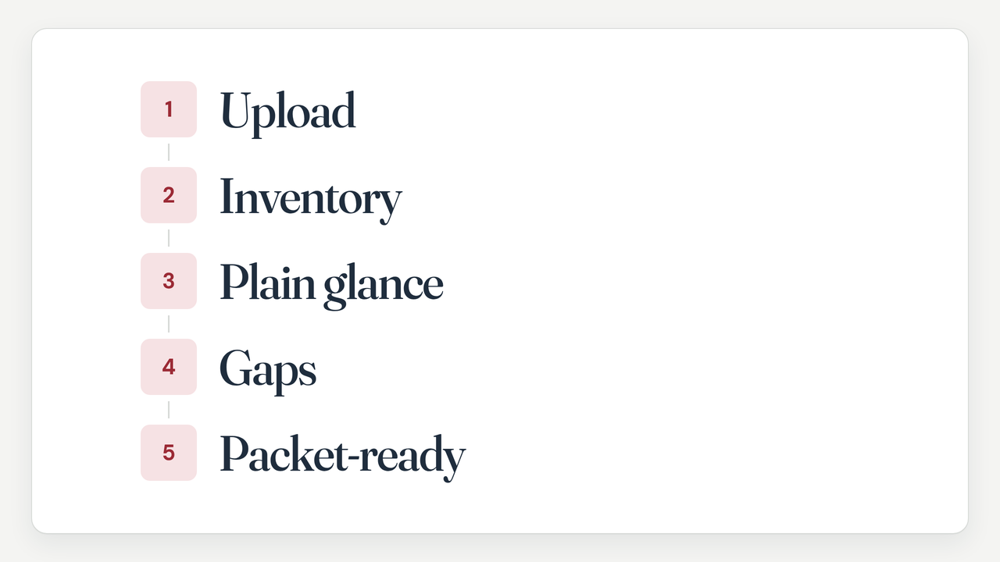

How it works
Every step, out in the open.
Here is the path we walk with you. Five steps from the records you have to a plain-English picture of what they show, what is missing, and what comes next.

Tell us where you are
Where you are in the Social Security process.
Share the records you have
Visit notes, imaging, therapy notes, medication lists when they exist.
Specialists assemble the file
Records specialists assemble what is in the file and explain it in everyday words.
You get clarity
What the records show, what is missing, and a next step.
If the file is thin, we say so
Honesty first. We never invent a diagnosis.
What you get
Records specialists assemble a plain-English picture of the file. A list of what is still missing. A next step you can follow, including an honest no.
What we do not do
Guarantee approval or a faster decision. Charge a percent of benefits. Sell doctor letters. File the Social Security claim for you.
Ready to start?
Bring the records you have. We will walk the next step with you.